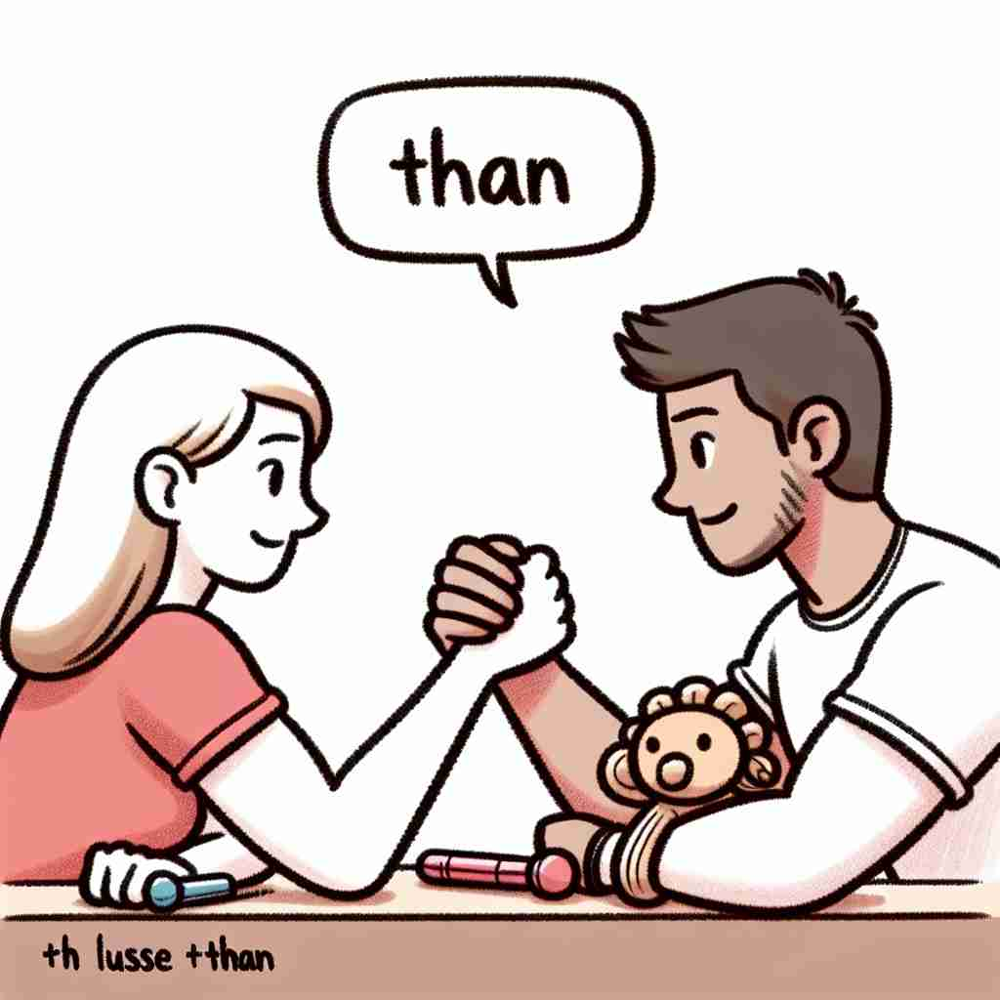

💬 The elephant is bigger than a mouse.

💬 She is running faster than others in the race.
💬 Apples are better than candy for your health.

💬 She thinks she is stronger than him in arm wrestling.
🔈 [ðæn][ð(ə)n]
🗝️ conj./prep. used to introduce the second part of a comparison
🖼️ 在一个学校的运动场上，两个孩子正在比谁跑得更快。一个孩子跑完后，得意洋洋地说：'我比你快！'这里的'比'就是'优于（than）'在比较句中的用法。
🔍 'Than' 的核心含义是引入比较的第二部分。想象一个天平，'than' 就像是天平的支点，连接并对比两端的事物。无论是直接比较、表达偏好，还是引入例外或对比，都是在这个天平上进行的。记住这个形象可以帮助你理解和记忆 'than' 的各种用法。
💬 The elephant is bigger than a mouse.
💬 She is running faster than others in the race.
💬 Apples are better than candy for your health.
💬 She thinks she is stronger than him in arm wrestling.
🌳 单词 'than' 是一种连接词（conjunction），用于进行比较，通常用于形容词或副词的比较级之后。它自身不是由词根词缀构成的，但在句法结构中起到关键作用。
💡 记住 'than' 可以联想为比较时使用的标志，想象两个事物之间的互动，如 'A is greater than B'。这个词总是紧跟在对比的两个对象之间，使它成为理解比较级的关键。
🗝️ conj./prep. used after words expressing preference
🖼️ 在一个温馨的咖啡馆里，一位顾客询问服务员哪种口味的咖啡更好。服务员微笑着说：'我们的招牌是摩卡，但大多数人更偏爱（prefer）拿铁。'此处的'偏爱…而不是'的用法, 即是说明选择偏好时使用'优于（than）'。
💬 I'd rather stay at home than go out tonight.
❓ 比较两个选择，表示倾向
🗝️ conj./prep. except, but (used after 'no one', 'nothing', etc.)
🖼️ 在一个宁静的图书馆中，管理员巡视后说道：'没有人比（than）你更喜欢待在这里了，每天都能见到你的面孔。'这里的'比'是用在否定句中，表示一种例外情况。
💬 No one other than John knew the truth.
❓ 引入唯一的例外，形成对比
🗝️ conj./prep. used to introduce an exception or contrast
🖼️ 在一个激烈的辩论会上，一位辩手站起来说：'大家都认为这是个坏主意，但我却有不同的观点。'这里'但（than）'用于引出与之前观点相反的说法。
💬 He claims to be no more than a friend.
❓ 引入与前面所述相反或不同的情况